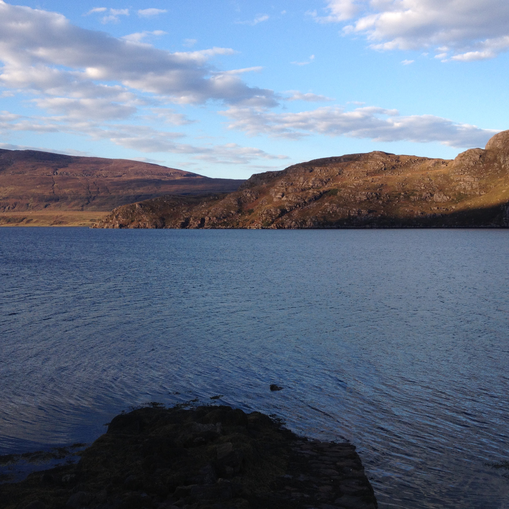
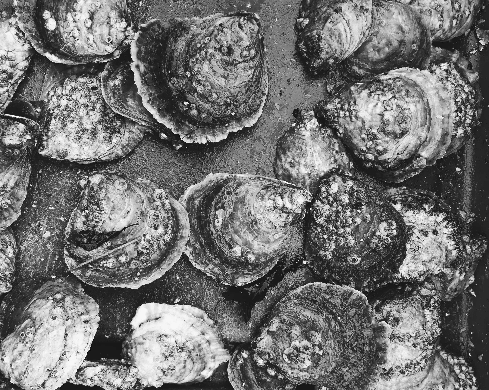
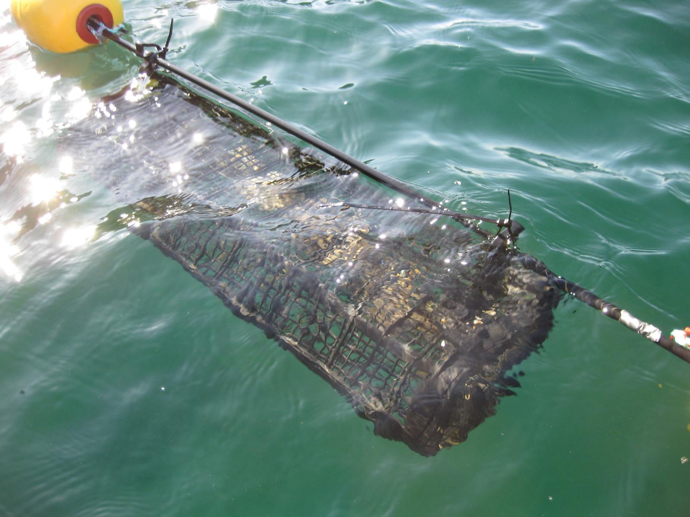

Our Story
Maorach Beag (Gaelic: Little Shellfish) is a small sustainable Scottish business cultivating oysters in Wester Ross, Scotland. But how did we get here?
Native Oyster (Ostrea edulis) & Marine Restoration
Wester Ross
Scotland
Our farm is located in Little Loch Broom, Wester Ross, Scotland.
We combine low-impact aquaculture techniques with modern environmental purpose.

Maorach Beag (Gaelic: Little Shellfish) is a small sustainable Scottish business cultivating oysters in Wester Ross, Scotland. But how did we get here?

The European Flat Oyster is now functionally extinct in many places. Working with various restoration projects we ongrow Ostrea edulis for deployment across Scotland.

Follow along with all our news, developments, experiments and restoration activities.
We welcome all enquiries and suggestions, please get in touch.